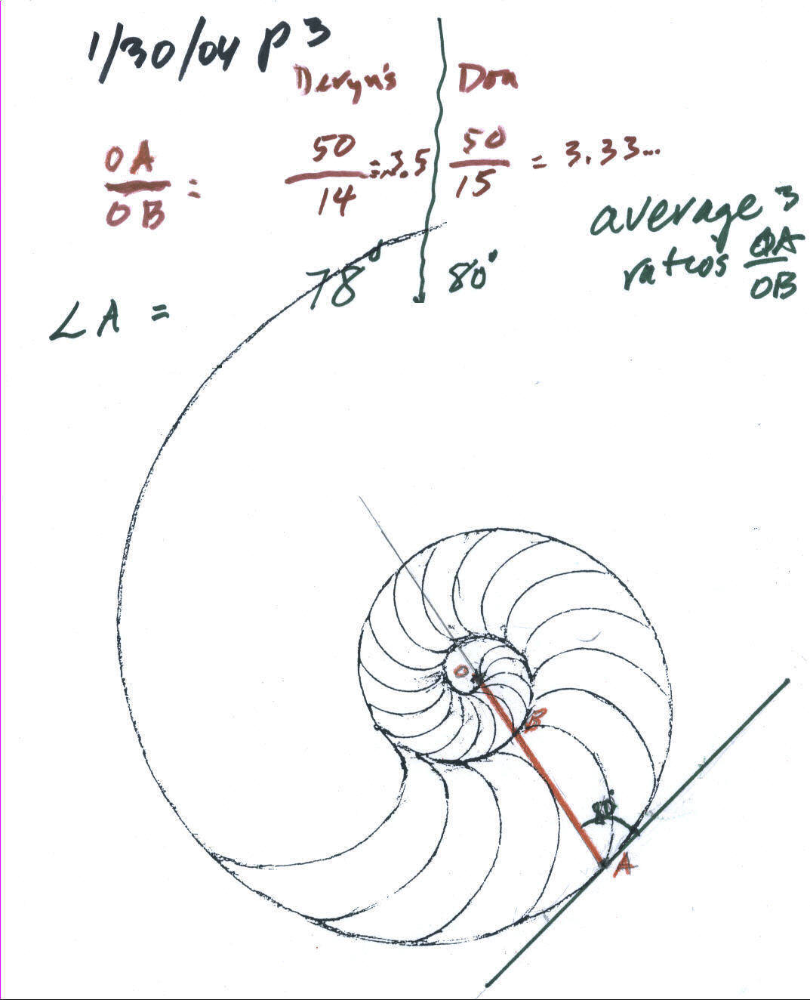

Deryn, age 10, works with Don via IM, from WV
On 4 December 2003, Don received a call from Judy, a co-worker of Don's friend Debbie (now with a Ph. D. in Computer Education, who used Don's books as a teacher in Iowa). Judy wants Don to work with her 10 yo daughter via Instant Messenger; she would order Don's worksheet book and agreed they would start 12 December 2003.
On
12 December 2003,
Don started working with Deryn, on solving
equations like
2x+3 = 13, negative numbers, and started work on the infinite series
 .
.
On 19 December 2003 Deryn gave Don 3 equations to solve. For their next session, Don asked Deryn to make up an equation that had no answer, another equation that every number would work, and another equation that would have a negative answer.
They talked about the
partial sums of the infinite series
 : 1/2, 3/4, 7/8, 15/16 ... Don asked Deryn to write the next 5
partial sums. Is there a pattern? She said the bottoms doubled and the tops are
one less than the bottoms. Are these numbers getting bigger or smaller or
staying the same? This led to a little confusion on Deryn's part and Don assured
her that everyone is confused most of the time. Don then had Deryn graph these
partial sums. Her graph is coming.
: 1/2, 3/4, 7/8, 15/16 ... Don asked Deryn to write the next 5
partial sums. Is there a pattern? She said the bottoms doubled and the tops are
one less than the bottoms. Are these numbers getting bigger or smaller or
staying the same? This led to a little confusion on Deryn's part and Don assured
her that everyone is confused most of the time. Don then had Deryn graph these
partial sums. Her graph is coming.
Fine job Deryn!
Deryn's dad sent this email message to Don after this session:
"Deryn is having a lot of fun with this. Thanks for your help. I'll have her finish the graph from today and I'll send it to you soon". He also sent Don a picture of Deryn for Don's mathroom and the picture above.
9 January 2004 Deryn worked on square numbers which go up by the odd numbers:
Don saw she could subtract 4 - 5 = -1using the number line or thermometer, so he had Deryn solve quadratic equations, like x2 - 5x + 6 = 0. In the process she used square numbers, negative numbers, subtracting whole numbers to get negative numbers, added negative and positive numbers, used a number line (thermometer) to add the signed numbers, learned how to use the rule for substitution (in an equation with more than one x, the same number has to be substituted into each of the x's), she found patterns (secrets) in finding the 2 answers to each quadratic equation.
Terrific job Deryn!
The 6 1/2 posed a little problem because Deryn wasn't completely sure of multiplying 3x 3 1/2. But she did fine. Deryn made up x2 - 13x + 4 = 0 for Don, but Don said that this couldn't be. She realized it should be x2 - 13x + 40 = 0 and Don told her the roots were {8,5}. For next time, Deryn was to make up quadratic equations for her Mom and her Dad.
Fine job, Deryn!
AR x AT = AR+T , which was Deryn's first identity for exponents.
Then Don gave Deryn this equation to solve: 73 x 7k = 71. After a little discussion, Deryn said { - 2}
Don had Deryn find powers of 2 and look for patterns as the exponent decreases (divide by 2 she said):
|
24 = 16 23 = 8 22 = 4 21 = 2 20 = 1 |
2-1
= 1/2 2-2 = 1/4= 1/22 2-3 = 1/8 = 1/23 2-4 = 1/16= 1/24 |
It took a little discussion to get 2-1 = 1' 2 = 1/2 and 2-2 = 1/2 ' 2 = 1/2 * 1/2 = 1/4. They then did a similar thing with powers of 10. Don suggested Deryn work on pp 14 and 15 in Don's worksheet book for next time.
Fine job, Deryn!
Then Don showed Deryn the whole Nautilus shell he has in his math room, from which came a watercolor painting and from this, the picture on each of his books and his logo. He had Deryn get her protractor and ruler and look at the 1/2 Nautilus shell on p. 103 in Don's worksheet book- made from a rubbing of his 1/2 shell. They were going to study how the shell grows:

Don showed Deryn how to draw a radius vector, a line from the center O to the edge of the shell at point A (in red), passing though point B at the at the inner edge. From point B around to point A is a 360' turn. They each measured the lengths OA and OB in millimeters, then found the ratio of OA/OB. Deryn got 50/14= 3.5 and Don got 50/14= 3.333... Don asked Deryn to do two other examples like this on the shell and average these three ratios.
Then Don showed Deryn how to measure an angle with a protractor--a little difficult looking at a webcam picture. He showed Deryn how to draw a tangent line (touching the curve at only one point, A) . Don extended the line through O to better measure the angle. They each measured the smaller angle at point A, shown above. Don measured 80' and Deryn measured 78'. Deryn was to draw a tangent at two other points and measure the smaller angle in each case, then average these angles.
This was a difficult task; we'll see what Deryn comes up with next week.
16 February: Don and Deryn first worked on exponents and division of powers of a number.

Deryn, as you can see, did a fine job recording her work from p. 14 in Don's worksheet book. (A slight error on the last one on the right 5-3 should be 1/625). They worked on 105 / 102 = 103 = 105-2 . Deryn was quick to generalize this as AR / AT = AR-T , which was Deryn's second identity for exponents.
They averaged the ratios of OA/OB to see how the shell grew in 360' On Deryn's diagram below, she got 3.5 and 3.7, and Don got 3.3, 3.5 and 3.0. After a slight error adding these, she got 17.03/5 = 3.4 for the average. In The Language of Mathematics by Land, he came up with 3.2 (an error of about 6%). This is a constant a growth, no matter where one does the measurements!

Deryn measured the smaller of the two angles that the radius vector makes with the tangent to the shell. She got 78', and 81', and Don got 80', 81' and 79' and she figured out the average to be 79.8'. The book gives 79.5', so they were very close.
Because Deryn wasn't sure how to divide 37 by 10 quickly, they worked on dividing by 10, and 100, and multiplying by 10 and 100, the easy way.
Deryn worked on positive and negative exponents, measured in millimeters, found ratios, used division, measured angles, and divided and multiplyed by 10, and 100 the easy way.
Fine job Deryn!
21 February: Don started Deryn on graphing linear equations: He started with 2x+3=y (the dot graph below). Deryn found pairs of numbers for x and y that would make the sentence true; she found the pairs in the lower table below. When she tried to follow the pattern, over 1 space to the right, the points went up 2 spaces. She made 2 mistakes in going down, she said (-2,2) and (-1,2) would work, but realized it was (-1,1). They checked to see if that pair made the sentence true; they put -1 in for x and 1 for y: 2*-1 + 3 ?= 1. They talked about this and Deryn saw that 2*-1= -1+-1= -2 and -2 + 3 = 1, so 2*-1 + 3 = 1 gives 1=1 which is true so (-1,1) worked in the equation. They looked at how in the table the y-numbers went up by 2 when the x-number increased by 1 and the pattern on the graph went the same way, and there was a 2 in the equation!
Don asked Deryn what would happen on the graph if the equation was changed to 5x+3=y. She correctly predicted the points would go up 5. Deryn found the pairs of numbers in the upper table above and plotted them. She found she was correct in her prediction! Don asked her where did the adding number of 3 show up on the graph? The point (0,3) was on both graphs, so the adding number 3 was where the graph crossed the y-axis! Deryn made up an equation 3x+2=y and successfully graphed it.
Then Don gave Deryn 3 graphs below, and Deryn was to find the equation for each. She quickly got the equation for graph #1, 4x+6=y. And tried 1x+4=y for graph #2, but that didn't work for the point (3,5). The 4 was right, so the first number couldn't be 1. If it was 1 she would go 1 to the right and 1 up, which is not correct. The pattern is 3 to the right and 1 up.

Don left Deryn to struggle a little on these last two equations for graphs #2 and #3. He will see what she comes up with next time!
Deyn worked with patterns in the numbers (arithmetic), and in the graphs (geometry), and in the equations (algebra), she multiplied and added negative and positive numbers, made a 2-variable sentence true, checked to see if her answers were correct, and made up an equation to graph, by herself.
You did a great job, Deryn!
28 February: Don & Deryn continued work on equations for graphs #2 and #3 below: Deryn's second try was the equation 2x+4=y for graph #2, but when she tried the point (3,5), she found the sentence 2*3+4=5 was not true. So that equation didn't work. They knew the 4 was correct because that's where the graph crossed the y-axis (when x=0, y=4). Don showed Deryn that on graph #1 the 4 came from over 1 up 4, so 4/1 = 4, the pattern and the first number multiplied by x.

In graph #2, they went 3 to the right and 1 up, or they went 1 to the right and went up 1/3. So the slope was 1/3, and the equation is (1/3)x+4=y. They tried (3,5) again for x and y, and this time it worked (1/3)*3 + 4 =5 was true. To get the equation for graph #3, she first realized first that the slope had to be negative, and would be - 3/2. When they went to check the point (- 2,5), they had the problem (- 3/2)*(- 2) + 2 =? 5. This brought up 2 problems, they had to work on the multiplication of two negative numbers which is positive (by patterns). They then worked on the problem of what is ( 3/2)*(2), which Don used the pattern (1/2)*2 = 1, (2/2)*2 = 2, and (3/2)*2 = 3 and (7/2)*2= 7. Then they went back to the equation and was (- 3/2)*(- 2) + 2 = 5 true. Well (- 3/2)*(- 2) = 3, so (- 3/2)*(- 2) + 2 = 5 is true! So the equation for graph #3 was (- 3/2)x + 2 = y.
They then went to page 93 in Don's worksheet book to do more problems like these.
Fine job, Deryn!!